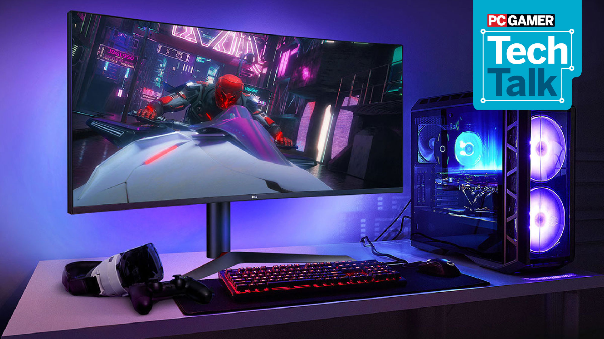
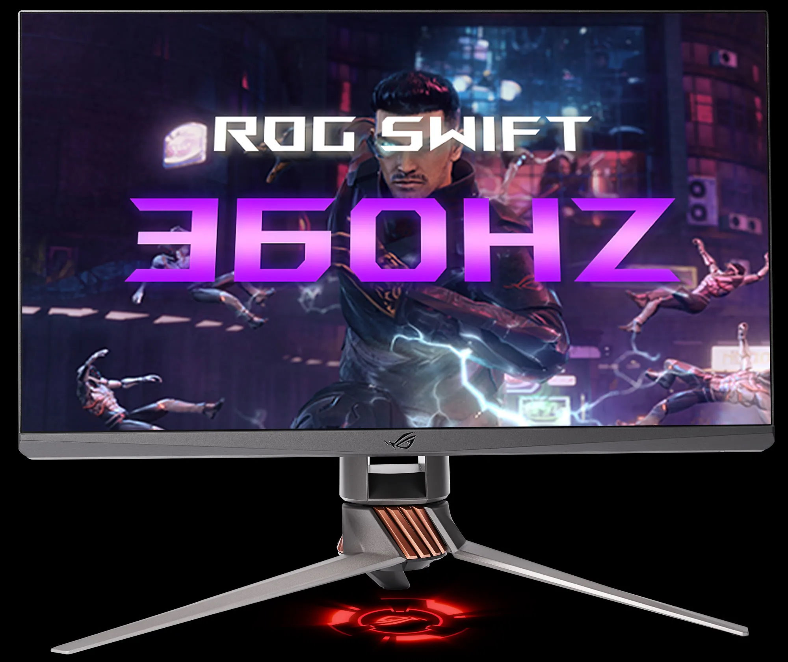
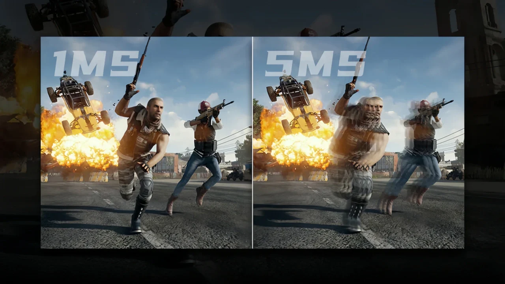
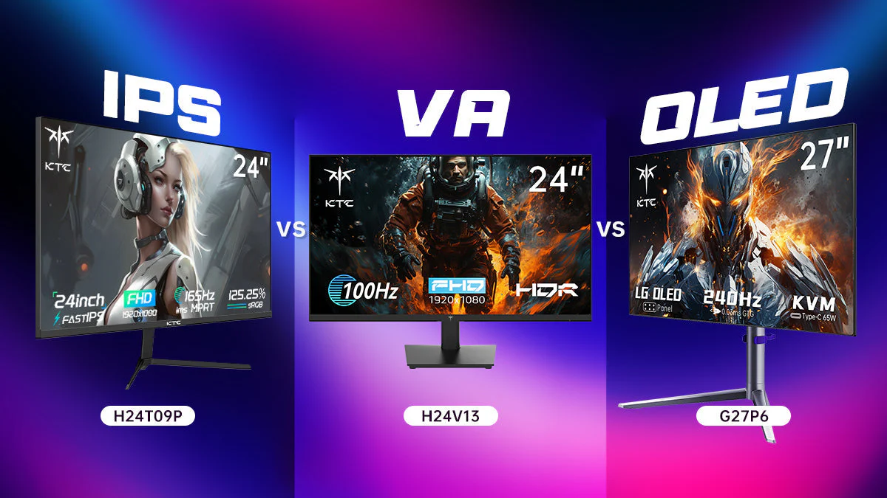

The Ultimate Guide to Monitors
| Feature | Why It Matters | Pro Tip |
|---|---|---|
| Resolution | Higher resolution provides clearer images and better detail. | Look for at least 1080p for gaming; 4K is ideal for high-end setups. |
| Refresh Rate | A higher refresh rate results in smoother motion and gameplay. | Choose 144Hz or higher for competitive gaming. |
| Response Time | Lower response times reduce motion blur and ghosting. | Opt for 1ms to 3ms for the best performance. |
| Panel Type | Different panel types affect color accuracy and viewing angles. | IPS panels offer the best color and viewing angles. |
| Connectivity | Ensure compatibility with your devices for seamless use. | HDMI and DisplayPort are preferred for gaming monitors. |
1. Resolution
Resolution is a key factor in monitor performance. Higher resolutions, such as 1440p or 4K, provide sharper images and more detail, enhancing your gaming and viewing experience.
- Improved image clarity
- Better detail in games and media
- Higher resolutions require more powerful hardware
2. Refresh Rate
The refresh rate of a monitor determines how many times per second the image is updated. A higher refresh rate leads to smoother gameplay, especially in fast-paced games.
- Smoother motion in games
- Reduced motion blur
- Requires a powerful GPU to take full advantage
3. Response Time
Response time measures how quickly a pixel can change from one color to another. Lower response times reduce ghosting and blurring, which is crucial for competitive gaming.
- Clearer images during fast action
- Improved gaming performance
- Some monitors may have higher response times
4. Panel Type
The type of panel affects color reproduction and viewing angles. IPS panels are known for their superior color accuracy and wider viewing angles compared to TN panels.
- Better color accuracy
- Wider viewing angles
- Typically more expensive
5. Connectivity Options

Ensure your monitor has the necessary ports for your devices. HDMI and DisplayPort are essential for gaming, while USB ports can enhance connectivity for peripherals.
- Compatibility with multiple devices
- Convenient for connecting peripherals
- Some monitors may lack certain ports
Frequently Asked Questions

What is the best resolution for gaming?
For gaming, 1080p is the minimum, while 1440p and 4K are preferred for high-end setups, providing better detail and clarity.
How important is refresh rate?
A higher refresh rate (144Hz or more) is crucial for competitive gaming, providing smoother visuals and reducing motion blur.
What panel type should I choose?
IPS panels are recommended for their superior color accuracy and viewing angles, making them ideal for gaming and multimedia.
Conclusion & Tips
Choosing the right monitor involves considering resolution, refresh rate, response time, panel type, and connectivity. Investing in a quality monitor will enhance your gaming and productivity experience. For more tips and gear recommendations, explore Gamevora's blog.
- Test monitors in-store if possible for color and clarity.
- Check for adjustable stands for better ergonomics.
- Read user reviews for insights on performance and durability.